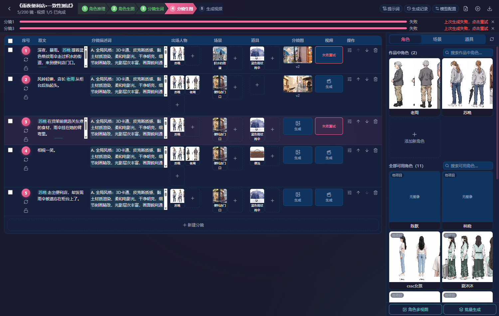
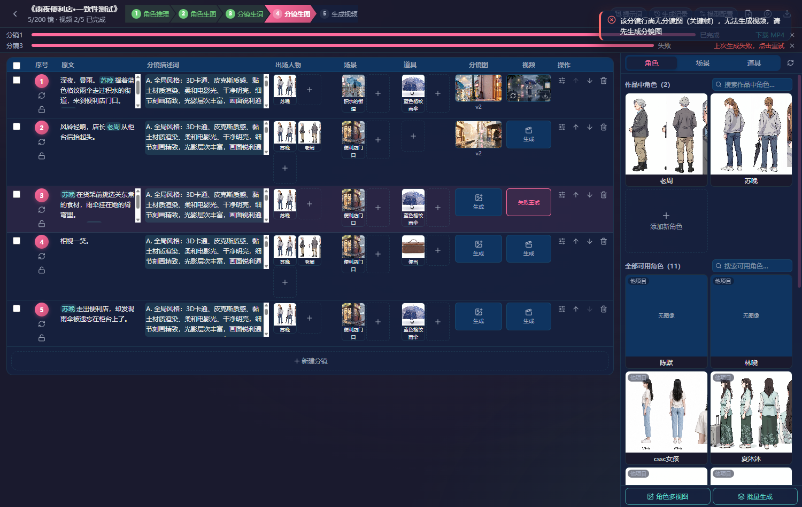
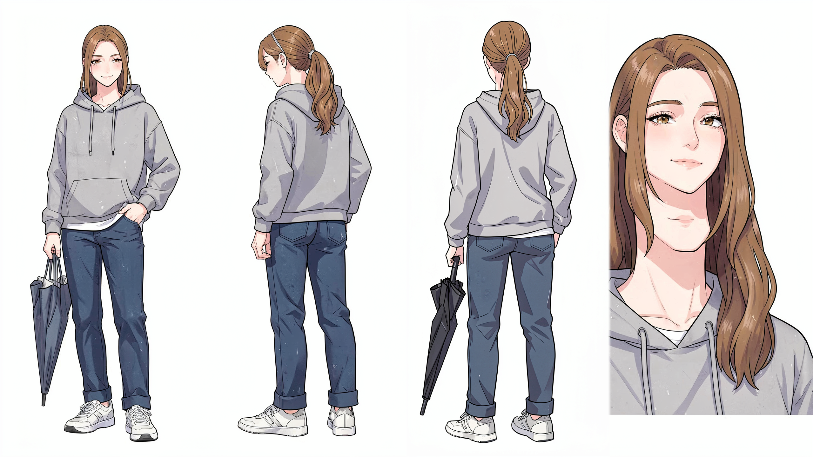
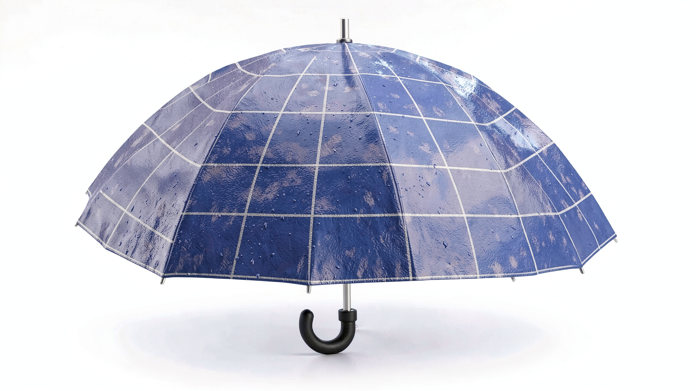

漫剧创作模块 · 一致性深度测试报告 （第 3–4 轮）
OmniSpace AI v2.3.1 · 剧本 → 资产 → 描述词 → 关键帧 → H3 视频 全链路一致性验证 + 错误排除
4
P0 缺陷修复并验证
6
P1 待修问题
4
P2 待优化（另 1 项已联动修复）
1
H3 成片产出（5.17s·带音轨）
01 · 测试设计与执行路径仿真人操作 · 可见浏览器 · 54 张过程截图
延续多角色仿真人测试法：本轮聚焦「生成出来的视频能否保持人物 / 场景 / 道具一致性」，全程在真实前端界面以 Playwright 有头浏览器操作，每一步均截图留证。
F1a 剧本导入 · AI 切分 5 镜
→
F1b 实体推理 · 6 资产生图 · 绑定
→
F1b A/B/C 描述词生成
→
F1c 1×2 网格关键帧 ×2 版
→
F1d H3 链式视频生成
→
F1d3/d4 拒绝路径复测 · toast 验证
→
F2 跨镜一致性四维核查
| 角色 | 人格设定 | 操作特征 | 核心关注 |
|---|---|---|---|
| F1 资深制作人 | 熟悉竞品工作台，追求量产效率 | 按工序箭头条逐工序推进，跳过帮助，直接批量操作 | 链路能否走通、耗时、失败后能否重试 |
| F2 一致性质检官 | 发行方质检视角，逐帧较真 | 资产→关键帧→视频三方逐镜比对，读库核对门禁数据 | 人物 / 场景 / 道具 / 画风四维一致性 |
测试物料：剧本《雨夜便利店》（苏晚×老周，深夜暴雨，蓝格纹雨伞+关东煮便当）——刻意包含双人对话、贯穿道具（雨伞）、室内外场景切换三类一致性挑战。
02 · 本轮错误排除：4 个 P0 缺陷的根因与修复全部修复并经真实浏览器复测验证
F1d 视频生成测试首先暴露出「H3 采样成功、任务却失败」的链路断点。逐层下钻（后端日志 → ComfyUI 日志 → custom node 源码 → 二进制探测）定位出四个独立缺陷，已全部修复；其中缺陷 #4 是缺陷 #1 修复自身的回归，在最终复测中被抓出并闭环。
缺陷 #1 · H3 视频对无关键帧行未诚实拒绝 已修复
| 项 | 内容 |
|---|---|
| 现象 | 镜 3（无关键帧）点击「生成该镜视频」：前端仅闪过文案，后端仍创建任务并跑满 90 秒 H3 采样，最后在拼接段失败，任务卡死 generating。 |
| 根因 | ① video.py 的 H3 默认分支缺少关键帧存在性校验（项目规则「H3 仅支持网格关键帧行」未落地）；② 首版修复把校验放在任务落库之后——拒绝生效但库里留下永不更新的幽灵 generating 任务（复测抓到实锤：任务 e9546f5f 落库 28s 后仍 0%）。 |
| 修复 | 校验前置到任务落库之前（锁获取后立即校验，raise 经 finally 正常释放 video_gen 锁），返回 40005「该分镜行尚无分镜图（关键帧），无法生成视频」。 |
| 验证 | 复测：API 0.0s 内拒绝（日志 ApiError: SYSTEM_RESOURCE_NOT_FOUND），无新任务落库 ✓ |
缺陷 #2 · H3 失败后任务状态卡死 generating 已修复
| 项 | 内容 |
|---|---|
| 现象 | 两条失败任务的 video_tasks.status 永远停在 generating（17.5% / 18.6%），前端进度条「假活」10 分钟以上。 |
| 根因 | _h3_chain_worker_gen 的 except 分支只回写了 storyboard_rows.generation_status，漏掉 video_tasks 状态回写。 |
| 修复 | except 分支补 video_tasks → status='error', progress=1.0, generation_time_ms 回写。 |
| 验证 | 复测：任务 45e6973c 失败后 141s 即转为 error/100%，前端按钮变「失败重试」态 ✓（历史 3 条卡死任务已一并清理为 error） |
缺陷 #3 · ComfyUI 拼接段选中宿主 Electron 阉割版 ffmpeg 已修复
| 项 | 内容 |
|---|---|
| 现象 | H3 扩散采样成功、clip 段 mp4 与音频已落盘，但最终拼接报 ffmpeg failed (0xABAFB008): Error splitting the argument list: Option not found，两条任务全部阵亡。 |
| 根因链 |
① custom node 用 shutil.which("ffmpeg") 找拼接器 → ② 系统 PATH 首位是宿主应用 d:\TreaWork\TRAE SOLO CN\...\bin\ffmpeg.exe——Electron 阉割版（实测 --disable-everything 仅留 libx264，连 lavfi 都没有，-version 探测却能通过）→ ③ 探测缓存 _FFMPEG_PROBE_CACHE 判定「可用」，实际执行 concat/ffmetadata/movflags use_metadata_tags 时报 Option not found。 ④ 首版只修了 comfy_paint_engine.py，但拉起 ComfyUI 的是 h3_engine.py 的第二套 spawn（不传 env），复测仍然失败——两处 spawn 都要前置。 |
| 修复 | comfy_paint_engine.py 与 h3_engine.py 两处 _spawn() 统一将 runtime/ffmpeg/bin（完整版 8.1.2）前置到子进程 PATH。 |
| 验证 | 复测：镜 1 全链路 123 秒产出成片（h264 864×480 + aac 音轨，1.74MB）✓ |
同根因风险提示：任何「探测能过、执行才炸」的阉割 ffmpeg 都会绕过 custom node 的可用性探测。项目内所有 shutil.which("ffmpeg") 类查找（含后端自身）建议统一走显式路径常量（runtime/ffmpeg/bin），不要依赖系统 PATH。
缺陷 #4 · 拒绝路径 flow 未初始化引发 500，前端 toast 静默 已修复
| 项 | 内容 |
|---|---|
| 现象 | 缺陷 #1 修复后复测：拒绝确实生效（无新任务落库），但前端 toast 为 null——后端日志爆 UnboundLocalError: local variable 'flow' referenced before assignment (video.py:1051)，结构化错误响应被打成未捕获 500。 |
| 根因 | 缺陷 #1 的校验 raise 位于 flow = start_flow(...) 之前，而函数级 except 分支无条件调用 flow.end(...)——入口拒绝路径上 flow 尚未建立。属于「修复引入的回归」，首版验证只核对了任务未落库，漏验了错误响应体本身。 |
| 修复 | try 前置 flow = None，except 分支加 if flow is not None 判空守卫；其余 9 处 flow 引用核查均在初始化之后或经 NULL_FLOW 兜底，安全。 |
| 验证 | API 复测：HTTP 200 + success:false / SYSTEM_RESOURCE_NOT_FOUND /「该分镜行尚无分镜图（关键帧），无法生成视频，请先生成分镜图」；浏览器复测（截图 96）：toast 元素完整展示该文案，1.2s/2.5s 双时点均在 ✓ |

修复前（截图 92）点击「生成该镜视频」后 4s 静默——500 打穿结构化错误，toast 为 null

修复后（截图 96）toast 完整展示「该分镜行尚无分镜图（关键帧），无法生成视频，请先生成分镜图」
教训：负向测试必须同时断言「副作用未发生」与「错误响应结构正确」——只看任务未创建会漏掉 500 类回归。此缺陷同时解释并联动修复了下文 P2「镜3 被拒后前端无可见 toast」。
修复代码索引（ruff 全绿 + 全量单测 146 passed）
# src/api/manga/video.py —— 关键帧前置校验（锁获取后、任务落库前） if (req.storyboard_row_id and req.model_override != "local" and not req.audio_path): kf = _db.query_one("SELECT id FROM keyframes WHERE row_id=? AND is_current=1", ...) if not kf: raise ApiError(40005, "该分镜行尚无分镜图（关键帧），无法生成视频，请先生成分镜图", ...) # src/api/manga/video.py —— 失败状态回写 d.update("video_tasks", {"status": "error", "progress": 1.0, "generation_time_ms": int((time.time()-t0)*1000)}, "id=?", (task_id,)) # src/api/manga/video.py —— 缺陷#4：flow 判空守卫（入口拒绝时 flow 未建立） lock = await acquire_or_raise("video_gen", ...) started = False; flow = None # 前置初始化 try: ... flow = start_flow(...) ... except Exception as exc: if flow is not None: # 判空守卫，拒绝路径不再 500 flow.end("error", error_code="SUBMIT_FAILED", ...) # src/services/inference/{comfy_paint_engine,h3_engine}.py —— 两处 spawn 同款 ff_bin = ROOT_DIR / "runtime" / "ffmpeg" / "bin" if ff_bin.is_dir(): env["PATH"] = str(ff_bin) + os.pathsep + env.get("PATH", "") # → ComfyUI 子进程内 shutil.which("ffmpeg") 命中完整版 8.1.2
顺手清理存量 lint：h3_chain 批量端点 2 处 F841（未使用变量 lock/started，worker 内部已自管锁释放）。数据侧清理 3 条卡死/幽灵任务为 error 态。
03 · 一致性专项评测：资产 → 关键帧 → 视频三方对照F2 质检官逐帧核查
用户核心诉求：生成出来的视频能否保持人物、场景、道具一致性。F2 将「角色资产立绘（真源）→ 1×2 网格关键帧 → H3 视频帧」做三方逐镜比对，并叠加画风维度（第 4 维）。
3.1 人物一致性 —— ■ 良好（服装发型全链路保持）

真源 · 苏晚资产立绘（4视图）女性 · 栗棕低马尾+银发圈 · 浅灰卫衣+白T+深蓝牛仔裤+白鞋 · 2D 写实漫画风
镜 1 关键帧 v2（1×2 网格）同服装同发型 ✓ · 蓝格纹伞 ✓ · 但画风已是 3D 皮克斯

镜 1 视频中帧深棕低马尾+灰卫衣+深蓝牛仔裤+白鞋 全套保持 ✓ · 双手握蓝格纹伞 ✓

镜 3 视频中后帧 · 双人同框老周（灰白发+深色外套+浅蓝衬衫）与苏晚（马尾+灰卫衣）同框互动 ✓
| 链路 | 苏晚（主角） | 老周（配角） | 判定 |
|---|---|---|---|
| 资产 → 关键帧 | 服装/发型/发色 100% 保持；PuLID 身份硬锁下 face_sim 0.66–0.69 | 灰白发+工装夹克+浅蓝衬衫保持；但凭空多出细框眼镜（资产无） | 基本通过 |
| 关键帧 → 视频 | 服装/发型贯穿 5.17s 成片；首帧有一次性漂移（见 P2-12） | 镜 3 视频与资产高度一致（灰发/深外套/浅蓝衬衫/递便当动作） | 通过 |
| 跨镜（镜1 ↔ 镜3 视频） | 同为马尾+灰卫衣 ✓ | 镜 3 单独出场，无跨镜比对样本 | 通过 |
3.2 场景一致性 —— ■ 良好

镜 1 视频尾帧便利店门口：玻璃门+货架暖光+「24営業中」标识+雨后湿地面 ✓ 收起的伞倚门边（与关键帧右镜呼应）

镜 3 视频首帧便利店内：热食陈列柜+饮料货架+收银台 ✓ 与场景资产「便利店门口」语义一致
| 维度 | 证据 | 判定 |
|---|---|---|
| 镜 1（街道→店门） | 雨夜积水街道 + 霓虹招牌 + 便利店玻璃门暖光，全片贯穿；门内货架可见 | 通过 |
| 镜 1 → 镜 3（外→内） | 同一便利店的内外空间衔接自然（玻璃门内外视角连续） | 通过 |
| 镜 2（例外） | 关键帧画成「门外晴/雨对比」——与剧本「店内柜台后抬头」错位（根因在描述词，见 §04） | 错位 |
3.3 道具一致性 —— ■ 部分通过（跨镜形态漂移）

真源 · 蓝色格纹雨伞资产3D 皮克斯风道具设定图

镜 1 首帧 · 疑点帧撑深蓝格纹伞 ✓ 但左手凭空多一把收起的黑伞（疑似资产立绘里苏晚的黑折叠伞被同时注入参考）
| 道具 | 镜 1 | 镜 3 | 判定 |
|---|---|---|---|
| 蓝色格纹雨伞 | 撑开→收起全程在场，格纹/颜色/长柄均 ✓ | 变成深色折叠伞（本镜未绑定伞资产，描述词只写「雨伞悬臂弯」） | 跨镜漂移 |
| 便当（关东煮） | — | 以「散装热食柜台」呈现，中后帧出现深棕色便当盒（老周双手递出）✓ | 语义达成 |
| 幻觉道具 | 首帧多出一把黑伞 | 无 | P2 |
3.4 画风一致性 —— ■✗ 未通过（全链路三段式漂移）
| 环节 | 实际画风 | 与项目 art_style「3D 卡通·皮克斯质感」 |
|---|---|---|
| 角色/道具/场景资产 | 2D 写实日韩漫画风（klein-4b 生成） | ✗ 偏离 |
| 1×2 网格关键帧 | 3D 皮克斯/黏土渲染风（klein-9b） | ✓ 达标 |
| H3 视频 | 2D 日式动画风（新海诚系赛璐璐） | ✗ 偏离 |
这是当前一致性体系最大的结构性短板：三个环节三种画风，且 VLM 画风门禁（阈值 75）持续报警（45/60）却未能拦截。根因是资产引擎（klein-4b）、关键帧引擎（klein-9b）、视频引擎（H3）三者的美学先验各不相同，仅靠提示词 A 段「3D卡通、皮克斯质感」约束力不足。建议：统一资产生成引擎与关键帧引擎为同一 FLUX.2-klein 版本 + 资产风格 LoRA 锚定；或在 H3 工作流注入风格参考图（style reference）。
3.5 最终成片（修复后产出）
镜 1 成片 · h264 864×480 · 5.17s · AAC 环境音轨（雨声/脚步/门轴，符合 A 段「无字幕无BGM只有音效」）· H3 链式引擎 123s 生成 · 与修复前失败任务采样结果逐字节一致（--deterministic 确定性生效）
04 · 一致性门禁数据全景三重门禁 + VLM 画风通道实测
| 镜头 | 版本 | 结构分 | face_sim | scene_sim | style | 判定 | 质检官复核 |
|---|---|---|---|---|---|---|---|
| 镜1 · shot1 | v1 / v2 | 95 / 95 | 0.693 / 0.659 | 0.816 / 0.818 | 45 / 45 | 通过 | ✓ PuLID 身份锁有效 |
| 镜1 · shot2 | v1 / v2 | 0 / 0 | 0.523 / 0.497 | 0.434 / 0.399 | 30 / 60 | 两版均未过 | 重抽 2 次仍不达标却标 done 放行 |
| 镜2 · shot1 | v1 → v2 | 0 → 100 | 0.305 → 0.307 | 0.114 → 0.616 | 20 → 20 | 拒 → 过 | scene 维度达标翻转判定 |
| 镜2 · shot2 | v1 → v2 | 95 / 95 | 0.427 / 0.424 | 0.114 → 0.274 | 20 → 30 | 过 / 过 | face_sim 0.42 远低于 0.75 仍判 passed |
门禁口径三处疑点（P1-4 / P1-9）：
① 镜1 shot2 两版（含重抽）face_sim 0.52/0.50、scene_sim 0.43/0.40、style 30/60 全部低于阈值，任务最终却是 done + current=1——重抽上限耗尽后静默放行，用户不知情；
② 镜2 有人脸（face_count=1）却以 scene_sim 达标翻转判定，face_sim 0.30/0.42 未被拦——与「有人脸镜头 face_sim≥0.75 硬门禁」的文档口径不符；
③ VLM 画风通道（阈值 75）四组数据 20~60 全部报警但零拦截——当前仅记录不生效。
① 镜1 shot2 两版（含重抽）face_sim 0.52/0.50、scene_sim 0.43/0.40、style 30/60 全部低于阈值，任务最终却是 done + current=1——重抽上限耗尽后静默放行，用户不知情；
② 镜2 有人脸（face_count=1）却以 scene_sim 达标翻转判定，face_sim 0.30/0.42 未被拦——与「有人脸镜头 face_sim≥0.75 硬门禁」的文档口径不符；
③ VLM 画风通道（阈值 75）四组数据 20~60 全部报警但零拦截——当前仅记录不生效。
门禁原始 JSON（keyframes.consistency 字段节选）
镜1 v2: {"shots":[95,0],"face_sims":[0.659,0.497],"scene_sims":[0.818,0.399],
"style_scores":[45,60],"threshold":75,"face_threshold":0.75,
"scene_threshold":0.6,"style_threshold":75,"retried":true,"picked":2}
镜2 v2: {"shots":[100,95],"face_sims":[0.307,0.424],"scene_sims":[0.616,0.274],
"style_scores":[20,30],"min":95,"retried":true}
05 · A/B/C 描述词质量审查F2 逐镜审读
| 镜 | A 全局风格 | B 世界观锚定 | C 时间轴 | 审查结论 |
|---|---|---|---|---|
| 镜1 | ✓ 3D皮克斯+雨夜氛围 | ✓ 人物设定/道具/环境细节与资产一致 | ✓ 网格 1×2 标记 + 双镜秒数 + 运镜音效 | 优秀 |
| 镜2 | ✓ | ✗ 场景写成「便利店门口」——剧本是店内柜台后抬头 | ✗ 第二镜「老周收伞」主体错位（收伞的是苏晚）+ 编造剧情 | 两处硬伤 |
| 镜3 | ✓ | ✓ 双人+道具设定完整 | ✗ 缺「分镜网格」标记与秒数——双镜内容（货架前+柜台前）被当单帧处理 | 格式缺失 |
描述词缺陷会原样传导到下游：镜 2 的场景错位直接导致关键帧画成「门外晴/雨对比」（左帧晴天光照与「深夜暴雨」彻底矛盾）；镜 3 的网格标记缺失使其无法走多镜视频模式。LLM 生词的结构稳定性（网格标记必出）与主体归属准确性是两个高价值修复点——建议在 ai-describe 端点加结构校验（双动作原文 → 强制网格标记）+ 主体-动作一致性复核。
06 · 问题总清单P0×4 已修复 · P1×6 待修 · P2×4 待优化（另 1 项联动修复）
| 级别 | # | 问题 | 证据 | 状态 |
|---|---|---|---|---|
| P0 | 1 | H3 视频对无关键帧行不拒绝，静默建任务跑满采样后失败 | 任务 d37a05e6 落库即 generating | 已修复✓ |
| P0 | 2 | H3 失败后 video_tasks 状态卡死 generating，前端假活 | 两任务 17.5%/18.6% 永停 | 已修复✓ |
| P0 | 3 | ComfyUI 拼接选中宿主 Electron 阉割 ffmpeg，H3 全军覆没 | Option not found ×2 | 已修复✓ |
| P0 | 4 | 拒绝路径 flow 未初始化 → UnboundLocalError 500，结构化错误被打穿（缺陷#1 修复的回归） | video.py:1051 · toast null | 已修复✓ |
| P1 | 5 | 网格第二镜门禁重抽 2 次均不过仍标 done 放行，用户不知情 | 镜1 shot2 face 0.52→0.50 | 待修 |
| P1 | 6 | 画风三段式漂移：资产2D写实→关键帧3D皮克斯→视频2D日动；style 门禁 20~60 全程报警零拦截 | §3.4 对照 | 待修 |
| P1 | 7 | 镜2 描述词场景错位（门外 vs 店内柜台）+ 动作主体错位（老周收伞），传导至关键帧成「晴/雨对比」 | §05 | 待修 |
| P1 | 8 | 镜3 描述词缺网格标记/秒数，双镜内容退化单帧模式（LLM 结构不稳定） | §05 | 待修 |
| P1 | 9 | 跨镜道具漂移：蓝格纹长柄伞（镜1）→深色折叠伞（镜3）；镜1 首帧凭空多一把黑伞 | §3.3 | 待修 |
| P1 | 10 | 镜2 有人脸却以 scene_sim 翻转判定（face_sim 0.30/0.42 判 passed），与 0.75 硬门禁口径不符 | §04 | 待修 |
| P2 | 11 | 镜3 被拒后前端无可见 toast（4s 观察窗口内静默）——根因即 P0-4 的 500 | 截图 92/96 | 已联动修复✓ |
| P2 | 12 | 顶部残留旧「上次生成失败」提示条，不随重试清除 | 截图 92 | 待优化 |
| P2 | 13 | 镜1 视频首帧一次性漂移（形象偏男性化+披肩发→后帧恢复马尾） | vid-shot1-f1 | 观察项 |
| P2 | 14 | 便当资产以「散装热食」形态呈现（语义转化而非资产形态复刻） | vid-shot3-f1 | 观察项 |
| P2 | 15 | 镜2 关键帧老周凭空戴细框眼镜（资产无此元素）；左帧晴天与深夜暴雨矛盾 | kf-shot2-v2 | 待优化 |
07 · 性能实测RTX 5070 Ti 16GB · 480p 档
| 环节 | 耗时 | 备注 |
|---|---|---|
| 剧本 AI 切分（5 镜） | ~30s | qwen3-vl-4b（vLLM） |
| 单资产生图（4视图/道具/场景） | 15~40s/个 | FLUX.2-klein，6 资产共 ~3min |
| 单镜 A/B/C 描述词 | 8~15s | 含 refine 评分链 |
| 1×2 网格关键帧（含一致性评分+重抽） | 3.5~6min/版 | comfy+PuLID 路径；一致性复评占 ~2min |
| H3 链式视频（5.17s · 带音轨） | 123s | ComfyUI 冷启动(40s)+采样(60s)+拼接；修复前同链路 100% 失败于拼接段 |
| ComfyUI 冷启动 | ~40s | 8189 端口，H3 与绘画共用实例 |
08 · 改进建议（按优先级）
| 优先 | 建议 | 预期收益 |
|---|---|---|
| 高 | 画风统一工程：资产引擎与关键帧引擎统一为 klein-9b（或资产加风格 LoRA），H3 工作流注入风格参考图 | 根治三段式漂移，style 门禁可真正生效 |
| 高 | 门禁放行透明化：重抽耗尽仍不过时，任务状态标注 done_with_warnings 并在关键帧详情展示「第2镜未达标」 | 用户知情权，避免带病素材进视频 |
| 高 | 描述词结构校验：原文含双动作/双人 → 强制要求网格标记；主体-动作一致性复核（谁收伞） | 镜2/镜3 类错位从源头消除 |
| 中 | 道具跨镜绑定继承：同一道具在相邻镜自动继承绑定与形态描述（伞从镜1 到镜3 不换形） | 跨镜道具一致性 |
| 中 | 门禁维度口径对齐：face_count≥1 时 face_sim 为硬性维度；实现与文档（§04 口径）对齐 | 判定可解释、可信任 |
| 中 | ffmpeg 显式路径：全项目 ffmpeg 调用统一走 runtime/ffmpeg 常量，弃 PATH 查找 | 根除阉割版 ffmpeg 类环境依赖 |
| 低 | 拒绝 toast 已随 P0-4 修复落地（40005→SYSTEM_RESOURCE_NOT_FOUND 语义码 + 完整文案）；剩余「旧失败提示条自动清理」待办 | 新手可感知反馈（已完成 50%） |
09 · 附录：证据索引
| 证据 | 路径 |
|---|---|
| 过程截图（54 张，F1a~F1d4 全程） | e:\OmniSpace\temp_uat_manga\screenshots\F1_fullchain\ |
| toast 修复证据（截图 95/96） | e:\OmniSpace\temp_uat_manga\screenshots\F1_fullchain\9{5,6}-shot3-toast*.png |
| 成片（镜1 · 修复后） | e:\OmniSpace\data\videos\267f7f2983d14802\92df361dca144c619911b7473fcee384.mp4 |
| 失败任务段视频（修复前采样产物） | tools\ComfyUI_windows_portable\...\output\h3_chains\h3chain_{a7d19c83,d37a05e6}\segments\ |
| 关键帧（镜1/镜2 各 v1/v2） | e:\OmniSpace\data\keyframes\{267f7f29…,4cff9bf3…}\ |
| 测试脚本 | e:\OmniSpace\temp_uat\manga_F1{a2,b1,b3,c2,c3,d,d2,d3,d4}*.js · verify_flow_fix.py |
| 修复文件 | src\api\manga\video.py · src\services\inference\{comfy_paint_engine,h3_engine}.py |
| 回归验证 | ruff check 全绿 · tests/unit/unit 146 passed |